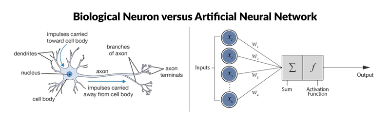
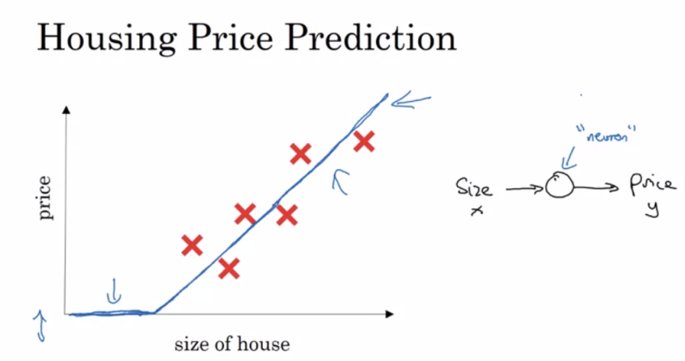
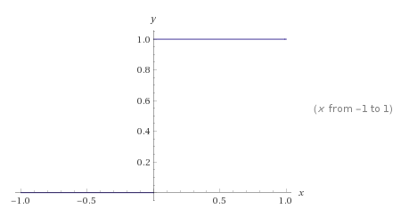
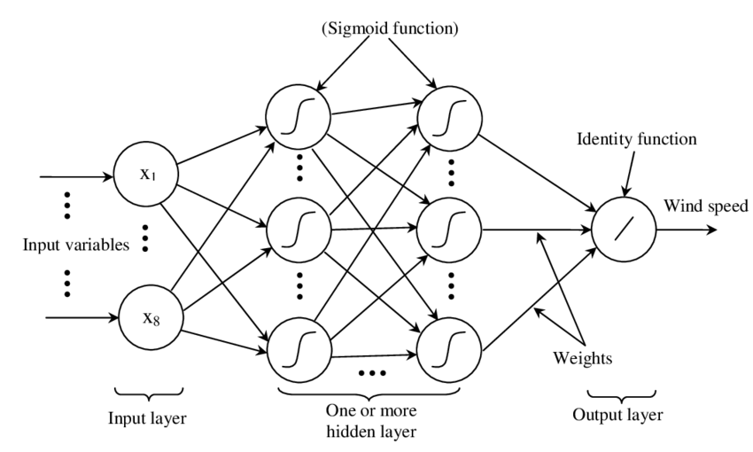
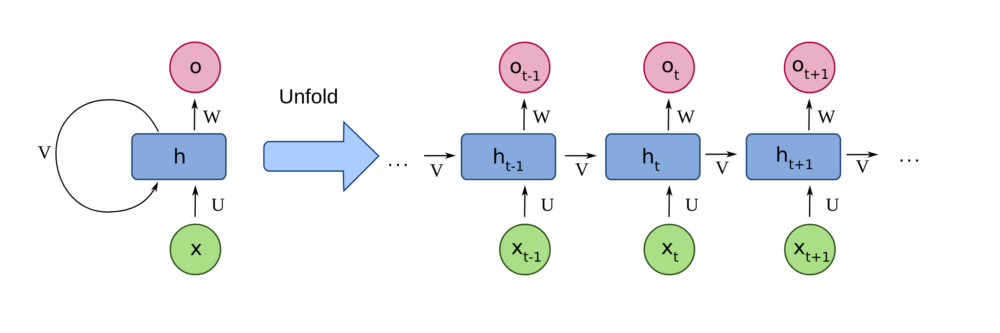
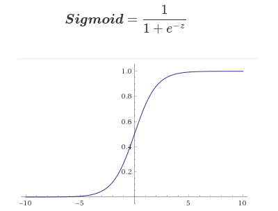

Introduction to Neural Networks
Learn the main concepts behind Neural Networks, one of Deep Learning’s pillars.
Versão em português aqui.
Introduction
Artificial Intelligence has been revolutionizing the industry in recent years and solving problems, which previously were costly in time and money, much more effectively. Computer vision problems, natural language processing, and several other applications are only possible thanks to advances in Deep Learning.
Artificial Neural Networks (ANN) are one of the main pillars of this technology. Inspired by the human brain, ANN carries this name because of its biological connections and motivations. Just as in the human brain, where the most basic processing unit is the neuron, ANNs have an element that processes impulses, or inputs, which is also called a neuron or node.

Biological Neuron vs Artificial Neuron. Source: [Keras Tutorial: Deep Learning in Python] (https://www.datacamp.com/community/tutorials/deep-learning-python)
Both structures share the same function for transferring information: they receive an input (impulse) that is carried through the node (cell body) and activate a certain output (axon terminals). Just as in biological neurons, this impulse that fires neurons is reproduced in ANNs through activation functions.
Therefore, this basic element of neural networks can be represented by the following figure, taken from the course Neural Networks and Deep Learning:

Where, through the example of the necessity to predict the price of houses based on their size, we can determine a function that can represent this problem. In this example, a ReLU function fits the data perfectly. So, the minimum representation of a neuron would be input the house’s area and, based on the mathematical function stored “inside” the neuron, we can estimate a price for that residence.
In this way, we train each neuron to be activated when a certain pattern appears. Thus, grouping several neurons in series and parallel, allows Neural Networks to learn to recognize patterns in images, texts, audios, and in the most distinct forms of data.
In this article, the main components of Artificial Neural Networks, some of the main architectures and the most common activation functions will be presented.
Artificial Neural Networks (ANN)
Although neural networks have some similarities to neurons in the human brain, they are infinitely simpler than their biological counterpart. These architectures are composed of mathematical blocks that can be explained using algebra and calculus, very different from the different parts of the brain that are not yet understood.
The main components of ANNs are input layers, hidden layers, and output layers. These layers are activated through weighted connections, which defines how important the connection is to the network. In addition, as we saw earlier, at the output of each neuron there is an activation function that defines whether the neuron will be fired or not.
Neural Networks Building Blocks
Generic 3 Layers Neural Network Architecture. Source: [Stanford CS231n] (https://cs231n.github.io/neural-networks-1/#nn)
Input Layer
A block of neurons can be called a layer. But note that although neurons are interconnected between layers, they do not have connections within the same layer. As shown in the figure above, the first layer of a Neural Network is the input layer. This has only the function of passing the system inputs to the next layer and does not perform any mathematical function.
Hidden Layers
This layer is responsible for one of the main functions of neural networks: to process the data and send it to the next layer. The value of each neuron is found by multiplying the weights W by the input X and adding a bias b. This value then goes through an activation function and is sent to the next layer, as shown in Fig. 2.
Mathematical operations within the neuron. Source: Source: [Stanford CS231n] (https://cs231n.github.io/neural-networks-1/#nn) Modified.
Thus, if we isolate the first neuron from the first hidden layer, the output value of the neuron will be equal to z1. Where s1 is the neuron’s input, where we multiply the weights by the inputs and add a bias b. After this operation, a transfer function g is applied over s1.
It is important to note that X and W in the first equation are matrices in this case and represent all inputs and all weights, respectively.
We call this layer “Hidden Layer” because during the training of neural networks we have the inputs that are known and the outputs that are expected. But we don’t see what values are inside the neurons in that layer. This block can contain several hidden layers, and the more layers the “deeper” the neural network is, and the more patterns it can learn.
Output Layers
The output layer is responsible for showing the results obtained through the calculations made in the hidden layers. Usually, an activation function is used, as well as that of the neurons in the previous layers, to simplify the result.
Weights and Bias
Weights are responsible for defining how important that connection is to the neural network. As there are several connections within the ANN, this is how this architecture understands which patterns it should learn and which ones it should ignore. In addition, a value called bias is commonly used with weights and inputs. This value helps to fine-tune the neural network. Thus, if we have a neuron i in one layer and a neuron j in the next layer, we have a connection with the weight Wij and a bij bias.
Activation Functions
Also called the transfer function, it is the last mathematical processing step that takes place before the information leaves the neuron. This mathematical equation defines whether the neuron will be activated or not, which may be a step function, a linear function, or a non-linear function.
The simplest activation function would be a step function. Where the neuron would activate only if the input was above a threshold, and the input signal would be fully reproduced at the node’s output.

This can return values of 0 and 1, used in classification problems, or between 0 and 1, used in problems that we are more interested in knowing the probability of a certain entry being part of a certain class.
Main Types of Artificial Neural Networks
There are two main types of Neural Networks: Feedforward Neural Networks and Recurrent Neural Networks.
Feedforward Neural Networks (FNN)
This architecture is the most commonly found in the literature. In it, information moves only in one direction: from the inputs, through the hidden layer to the output node, and there are no cycles.
The simplest unit of this topology is called Perceptron, the most simplistic neural network that is composed of just one node.

The Perceptron
Some simple problems can be solved with Perceptron, as it only works with linearly separable functions.
With the need to solve more complex problems and from this basic unit, the Multilayer Perceptron (MLP) was conceived. Composed of several layers of these nodes, being much more useful and being able to learn non-linear functions.

Multilayer Perceptron Architecture. Source: [Advanced Methods for the Processing and Analysis of Multidimensional Signals: Application to Wind Speed] (https://www.researchgate.net/figure/Architecture-of-a-multilayer-perceptron-neural-network_fig5_316351306)
And finally, we have the Convolutional Neural Networks (CNN), which are the most common example of Feedforward Neural Networks. Inspired by the Visual Cortex, this topology divides data into small pieces and tries to learn essential patterns. This operation is called Convolution. More efficient than MLP, this topology is found widely in computer vision, video, and natural language applications. This topology has its own characteristic blocks, such as the convolution and pooling layers.

Convolutional Neural Network Example. Source: Convolutional Neural Network Tutorial
Recurring Neural Networks (RNN)
Unlike Feedforward Neural Networks, in RNN information flows not only forward, but also backward, forming a cycle. For this, like CNN, they use several characteristical blocks, such as a memory block for example. This allows this topology to capture dynamic temporal patterns and be widely used in speech recognition problems and problems that require sequential linking.

Example of Recurrent Neural Network. Source: wikimedia
Types of Activation Functions
In addition to the step function, which I believe is not used in practice, there are several other activation functions. In addition to determining the model’s output, they also help with the accuracy of the results and the efficiency training. In practice, modern models use nonlinear activation functions, which are able to capture patterns in more complex data.
The activation functions are used in two moments in the Neural Networks: to process the output of a single neuron, as we saw during the topic of hidden layers, and to process the output of the neural network as a whole.



Normally Rectified Linear Unit (ReLU) functions are used in practice. The Sigmoid function is normally used to demonstrate how these elements work and is usually replaced by the Hyperbolic Tangent (TanH). Except in the case of the problem being a binary classification, in that case a Sigmoid function would be better in the model’s output as it would already deliver the result between 0 and 1.
The choice of the activation function is motivated by the characteristics of the problem being solved. Sigmoid, for example, despite having a smoother gradient and normalizing the output between 0 and 1, has problems with vanish gradients and its output is not centered at zero. TanH has its center at zero, which facilitates the learning of the following layers, but disadvantages similar to Sigmoid.
In addition to these, we can also highlight:
- Leaky ReLU
- Softmax
Conclusion
In this article we went through some of the main concepts of Artificial Neural Networks. After this review, I hope that you already have a more concrete idea of the basic concepts that involve one of the main topics of Deep Learning. Understanding the main building blocks of ANN, the main topologies and the most common activation functions, we can now move on to more advanced topics such as Forward and Backward Propagation and Gradient Descent.
Subscribe to Edge AI Guru
Get the latest posts delivered right to your inbox

{kind=link}